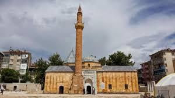
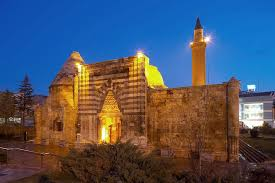

Anadolu'nun tam kalbinde yer alan Kırşehir, tarih boyunca ilim, irfan ve kültürün en önemli merkezlerinden biri olmuştur. Şehrin bu derin manevi atmosferi, asırlar öncesinden günümüze ışık tutan tarihi şahsiyetlerin bıraktığı eşsiz miraslardan kaynaklanır. Kırşehir sadece bir coğrafya değil; aynı zamanda bu topraklara meftun olmuş, hayatını buraya adamış erenlerin diyarıdır. Bu yazımızda, yolları bu kadim şehre düşen ve Kırşehir'de medfun olan zatlar ile onların tarihimizdeki silinmez izlerini inceleyeceğiz.
Ahi Evran-ı Veli: Esnafın ve Ahiliğin Piri
Kırşehir'de medfun olan zatlar denildiğinde akla ilk gelen isim şüphesiz Ahi Evran-ı Veli'dir. 13. yüzyılda yaşamış olan bu büyük düşünür, Ahilik teşkilatının kurucusudur. Ticaret ahlakını ve dayanışmayı Anadolu esnafına aşılayan Ahi Evran, Kırşehir'i bir sanat merkezi haline getirmiştir.

Cacabey: Gökyüzüne Uzanan İlim Kapısı
Selçuklu döneminin önemli devlet adamlarından ve bilim insanlarından biri olan Cacabey, dünyanın ilk astronomi okullarından biri kabul edilen Cacabey Medresesi'ni inşa ettirmiştir. Kendisi de medresenin hemen bitişiğindeki türbesinde medfundur. İlim aşkıyla bu topraklara meftun olan Cacabey'in mirası, Kırşehir'in bilim tarihindeki yerini perçinlemiştir.

Aşık Paşa: Türk Dilinin Yılmaz Savunucusu
13. yüzyılın sonları ile 14. yüzyılın başlarında yaşayan Aşık Paşa, "Garibname"yi saf Türkçe ile yazarak Anadolu'da Türkçenin edebi bir dil olarak kökleşmesini sağlamıştır. Kırşehir merkezindeki türbesi, mimari yapısı ve tarihi dokusuyla şehrin en önemli kültürel miraslarından biridir.
Neden Kırşehir Türbeleri Ziyaret Edilmeli?
Kırşehir, sahip olduğu bu manevi mimarlar sayesinde adeta bir açık hava müzesi ve huzur merkezidir. Kırşehir'de medfun olan zatlar, sadece kendi dönemlerine değil, günümüze de yön veren evrensel değerler bırakmışlardır. Daha fazla detay için Ana Sayfamızı ziyaret edebilirsiniz.